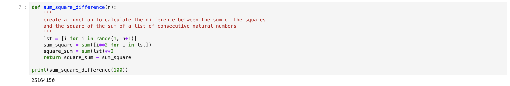
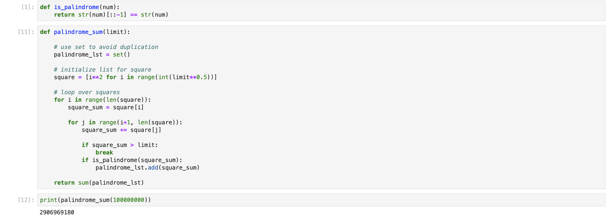

1. Msth is fun
In this project, basic python programming is used to solve 3 problems from the Euler Project. This blog is posted to decribe the solutions and how I approached each problem
Problem 6: Sum square difference
Find the difference between the sum of the squares of the first n natural numbers and the square of the sum.
The sum of the squares of the first ten natural numbers is, 1^2+2^2+3^2...+10^2 = 385. The square of the sum of the first ten natural numbers is (1+2+...10)^2 = 55^2 = 3025. Hence the difference between the sum of the squares of the first ten natural numbers and the square of the sum is 2640

STEP
Problem 50: Consecutive prime sum
Which prime, below one-million, can be written as the sum of the most consecutive primes?
The prime 41, can be written as the sum of six consecutive primes: 41 = 2 + 3 + 5 + 7 + 11 + 13 This is the longest sum of consecutive primes that adds to a prime below one-hundred. The longest sum of consecutive primes below one-thousand that adds to a prime, contains 21 terms, and is equal to 953.

STEP1: Create a function to check if a number is prime.
STEP2: Find the prime number that associate with the longest chain
Problem 125: Palindromic sums
Find the sum of all the numbers less than 10^8 that are both palindromic and can be written as the sum of consecutive squares.
The palindromic number 595 is interesting because it can be written as the sum of consecutive squares: 62 + 72 + 82 + 92 + 102 + 112 + 122.There are exactly eleven palindromes below one-thousand that can be written as consecutive square sums, and the sum of these palindromes is 4164. Note that 1 = 02 + 12 has not been included as this problem is concerned with the squares of positive integers.
